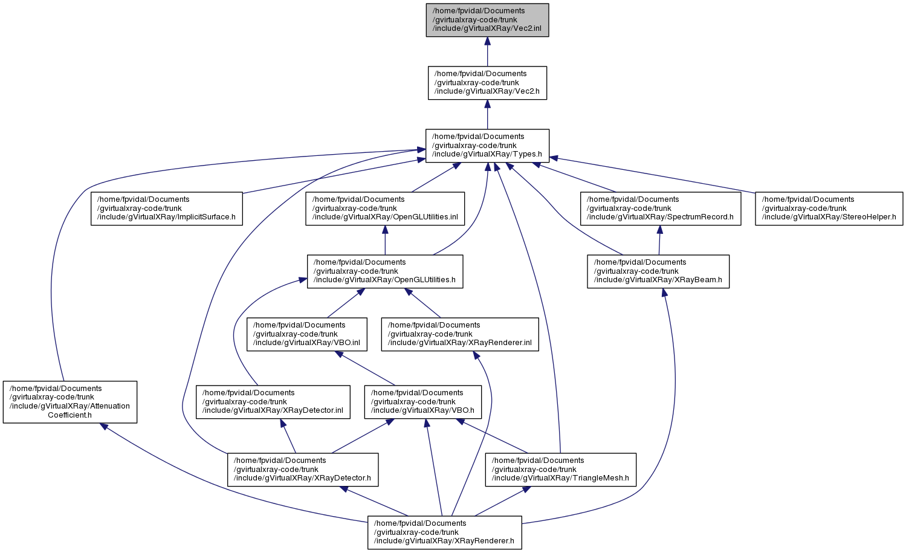

|
gVirtualXRay
1.2
Virtual X-Ray Imaging Library on GPU
|


All Classes Namespaces Files Functions Variables Typedefs Enumerations Enumerator Friends Macros Pages
|
gVirtualXRay
1.2
Virtual X-Ray Imaging Library on GPU
|
Template class to handle 2D vectors. More...

Go to the source code of this file.
Namespaces | |
| namespace | Math |
Functions | |
| template<typename T > | |
| std::ostream & | Math::operator<< (std::ostream &anOutputStream, const Vec2< T > &aVector) |
Template class to handle 2D vectors.
BSD 3-Clause License.
For details on use and redistribution please refer to http://opensource.org/licenses/BSD-3-Clause
(c) by Dr Franck P. Vidal (franck.p.vidal@fpvidal.net), http://www.fpvidal.net/, Dec 2013, 2013, version 1.0, BSD 3-Clause License
Definition in file Vec2.inl.
 1.8.2
1.8.2